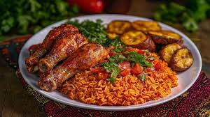

JELLOF RICE

JELLOF RICE RECIPE
Jellof rice is one of best food in nigeria.
It is made from natural ingedrients and is yummy to eat,
it is very healdy to eat.
INGREDENTS
- rice
- peper mix
- tomato paste
- onion
- vegatibles
- vegatible oil
- spices
- seasoning
- meat
- bay leaves(optional)
STEPS
- prepare your ingedrients
- par boil the rice
- make your stew(jellof source)
- steam your meat
- add meat stock to stew
- add rice
- let it cook(dont stir)
- check and taste
- serve
Home